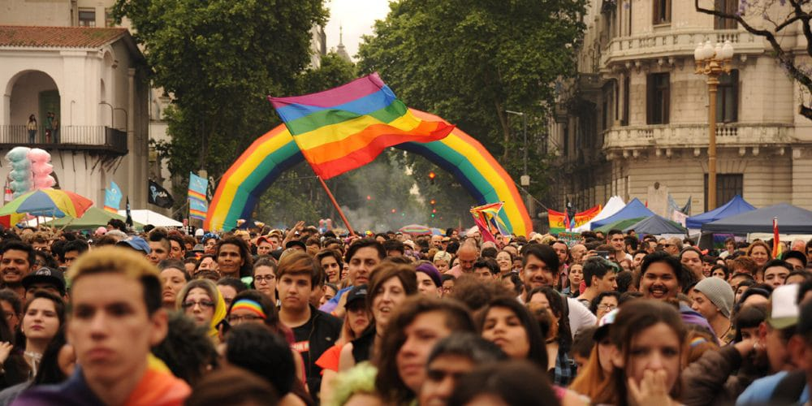

La llegada del papa León XIV abrió una inesperada disputa institucional: el Ejecutivo local emitió un comunicado sugiriendo restricciones a la circulación y pidiendo la reprogramación de la histórica 35ª edición de la Marcha del Orgullo LGBT+ prevista para el próximo 7 de noviembre, bajo el argumento de operativos de seguridad sobredimensionados.
Ante esta medida inconsulta, las comisiones organizadoras, activistas independientes y colectivas autogestivas salieron al cruce de manera inmediata. En una conferencia de prensa conjunta, ratificaron categóricamente que la movilización no se mueve de fecha ni de territorio.
"La calle es nuestra conquista histórica y no se negocia por agendas ajenas a las necesidades de nuestros cuerpos y derechos", señalaron desde la multisectorial. Se espera una masiva convocatoria para defender la soberanía de las calles porteñas.